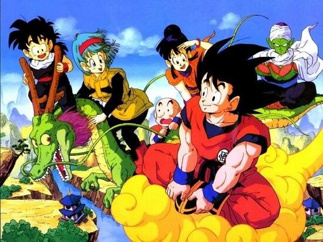

Dragon Ball Z
Introduction
Dragon Ball Z[c] is a Japanese anime television series produced by Toei Animation. Part of the Dragon Ball media franchise, it is the sequel to the 1986 Dragon Ball television series and adapts the latter 325 chapters of the original Dragon Ball manga series created by Akira Toriyama. The series aired in Japan on Fuji TV from April 1989 to January 1996 and was later dubbed for broadcast in at least 81 countries worldwide.[7]
Dragon Ball Z continues the adventures of Son Goku in his adult life as he and his companions defend the Earth against villains including aliens (Vegeta, Frieza), androids (Cell), and magical creatures (Majin Buu). At the same time, the story follows the life of Goku's son, Gohan, as well as the development of his rivals, Piccolo and Vegeta.
Due to the success of the series in the United States, the manga chapters making up its story were initially released by Viz Media under the Dragon Ball Z title. The anime's popularity has also spawned various media and merchandise that has come to represent the majority of the material within the Dragon Ball franchise, including films, home video releases, soundtracks, trading cards, and video games. Dragon Ball Z remains a cultural icon through numerous adaptations and re-releases, including a remastered broadcast titled Dragon Ball Z Kai.[d]
Dragon Ball Z has since been followed by a sequel series titled Dragon Ball GT (1996–1997) and a "midquel" series titled Dragon Ball Super (2015–2018).
 Google
Google
Plot
Dragon Ball Z picks up five years after the end of the Dragon Ball series, with Son Goku now a young adult and father to his son, Gohan.
A humanoid alien named Raditz arrives on Earth in a spacecraft and tracks down Goku, revealing to him that he is his long-lost older brother and that they are members of a near-extinct elite alien warrior race called Saiyans (サイヤ人, Saiya-jin). Goku (originally named Kakarot (カカロット, Kakarotto) had been sent to Earth as an infant to conquer the planet, but suffered a severe blow to his head shortly after his arrival and lost all memory of his mission, as well as his blood-thirsty Saiyan nature.
Raditz tells Goku that along with two stronger elites, Vegeta and Nappa, they are the only remaining Saiyans after their home planet Vegeta was destroyed. Raditz asks Goku to enlist in helping conquering planets and joining the remaining Saiyans. When Goku refuses to join and help them, Raditz takes Goku and Krillin down with one strike, kidnaps Gohan, and threatens to murder him if Goku does not kill 100 humans within the next 24 hours. Goku decides to team up with his arch-enemy Piccolo, who was also defeated by Raditz in an earlier encounter, to defeat him and save his son. During the battle, Gohan's rage momentarily makes him stronger than Piccolo and Goku as he attacks Raditz to protect his father. The battle ends with Goku restraining Raditz so that Piccolo can hit them with a deadly move called Special Beam Cannon (魔貫光殺砲, Makankōsappō, lit. "Demon Penetrating, Killing Ray Gun"), mortally wounding them both, and kills them after a short while. But before Raditz succumbs to his injuries, he reveals to Piccolo that the other two Saiyans are much stronger than him and will come for the Dragon Balls in one year.
Having witnessed Gohan's latent potential, Piccolo takes him into the wilderness to train for the upcoming battle against the Saiyans. In the afterlife, Goku travels the million-kilometer Snake Way so that he can train under the ruler of the North Galaxy, King Kai. King Kai teaches Goku the Kaio-ken (界王拳, Kaiōken, lit. "Fist of Kings of Worlds") and the Spirit Bomb (元気玉, Genki Dama, lit. "Energy Sphere") techniques. Despite his gruff and villainous nature, Piccolo grows fond of Gohan while he oversees him learning to fend for himself. This forges an unlikely emotional bond between the two.
After a year, Goku is revived with the Dragon Balls, but King Kai panics as he realizes that Goku will have to take Snake Way again to get back and will not make it until hours after the Saiyans arrive. Goku's allies group up to fight until Goku gets back, but prove to be no match for Nappa and the "Prince of All Saiyans", Vegeta. Yamcha, Tien Shinhan, Chiaotzu and Piccolo all perish in the battle, with Piccolo's death causing both Kami and the Dragon Balls to fade from existence. When Goku finally arrives at the battlefield, he avenges his fallen friends by easily defeating Nappa before crippling him by breaking his spine in half. A furious Vegeta then executes Nappa for his failure to kill Goku.
Goku uses several grades of the Kaio-ken to win the first clash with Vegeta, which concludes with a climactic ki beam struggle, but it comes at a great cost to his body. Vegeta comes back and creates an artificial moon to transform into a Great Ape, which he uses to torture Goku. Krillin and Gohan sense that Goku is in trouble, and they return for a group fight with the now-seemingly unstoppable Vegeta. They are aided at key moments by Yajirobe, who cuts Vegeta's tail to revert him into his normal state. Goku gives Krillin a Spirit Bomb that he made, and Krillin uses it to severely damage Vegeta. Vegeta is ultimately defeated when he is crushed by Gohan's Great Ape form, and he retreats to his spaceship as Krillin approaches to finish him off. Goku convinces Krillin to spare Vegeta's life and allow him to escape Earth, with Vegeta vowing to return and destroy the planet in revenge for his humiliation at Goku's hands.

Google
Music
Main article: List of Dragon Ball soundtracks
Dragon Ball Z has released a series of 21 soundtracks as part of the Dragon Ball Z Hit Song Collection series. In total, dozens of releases exist for Dragon Ball Z which includes Japanese and foreign adapted releases of the anime themes and video game soundtracks.
Shunsuke Kikuchi composed the score for Dragon Ball Z. The opening theme for the first 199 episodes is "Cha-La Head-Cha-La" performed by Hironobu Kageyama. The second opening theme used up until the series finale at episode 291 is "We Gotta Power" also performed by Kageyama. Both opening themes were replaced with an original instrumental piece by Mark Menza, the composer of the alternate soundtrack, in the remastered Funimation dub due to licensing issues. The ending theme used for the first 199 episodes is "Detekoi Tobikiri Zenkai Power!" (でてこいとびきりZENKAIパワー!, "Come Out, Incredible Full Power!") performed by MANNA. The second ending theme used for the remaining episodes is "Bokutachi wa Tenshi Datta" (僕達は天使だった, "We Were Angels") performed by Kageyama. The initial English-Language release used a completely new musical score composed by Faulconer Productions. It was used for the North American broadcasts of the show from 1999 to 2005.[73]
Kenji Yamamoto composed the score for Dragon Ball Kai. The opening theme, "Dragon Soul", and the first ending theme used for the first 54 episodes, "Yeah! Break! Care! Break!", are both performed by Takayoshi Tanimoto of the unit, Dragon Soul, in Japanese. Sean Schemmel, Justin Cook, Vic Mignogna, Greg Ayres, Sonny Strait and Brina Palencia performed the English version of the opening theme, while Jerry Jewell performed the English version of the ending theme.[74] The second ending theme, used from episodes 55–98, is "Kokoro no Hane" (心の羽根, "Wings of the Heart") performed by Team Dragon, a unit of the idol girl group AKB48, in Japanese and Leah Clark in English.[75] On March 9, 2011, Toei announced that due to Yamamoto's score infringing on the rights of an unknown third party or parties, the music for remaining episodes and reruns of previous episodes would be replaced.[76] Later reports from Toei stated that except for the series' opening and closing songs, as well as eyecatch music, Yamamoto's score was replaced with Shunsuke Kikuchi's score from Dragon Ball Z.
The music for The Final Chapters is composed by Norihito Sumitomo.[77] The opening theme is "Kuu•Zen•Zetsu•Go" (空•前•絶•後) by Takayoshi Tanimoto of Dragon Soul, while the first ending song is "Haikei, Tsuratsusutora" (拝啓、ツラツストラ, "Dear Zarathustra") by Japanese rock band Good Morning America,[78] and the second "Junjō" (純情, "Pure Heart") by Leo Ieiri from episode 112 to 123.[79] The third ending song is "Oh Yeah!!!!!!!" by Czecho No Republic from episode 124 to 136,[80] the fourth "Galaxy" by Kyūso Nekokami from 137 to 146, and the fifth is "Don't Let Me Down" by Gacharic Spin from 147 to 159.[81] The international broadcast features two pieces of theme music. The opening theme, titled "Fight It Out", is performed by rock singer Masatoshi Ono, while the ending theme is "Never Give Up!!!", performed by rhythm and blues vocalist Junear.
 Google
Google